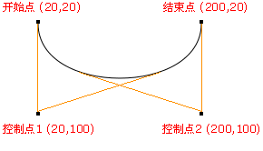

Canvas
- Canvas 通过 JavaScript 来绘制 2D图形。Canvas 是逐像素进行渲染的。开发者可以通过javascript脚本实现任意绘图
- 理一下步骤吧
//1.通过canvas标记的方式获取当前画布对象 var myCanvas = document.getElementById("myCanvas"); //2.创建context对象从canvas中获取 var ctx = myCanvas.getContext("2d"); //3.绘制图形- 矩形
ctx.fillStyle = "#228800"; //填充颜色，相当于css中的background-color ctx.fillRect(40,100,30,30);//绘制填充矩形 ctx.lineWidth = 5; ctx.strokeStyle = "#228800"; //轮廓颜色 ctx.strokeRect(45,150,25,25); //绘制轮廓矩形 //ctx.clearRect(0,0,55,260); //清除画布 ctx.strokeStyle="#008000"; ctx.fillStyle="#CD0000"; ctx.rect(40,200,50,50); //画矩形，可以填充也可以加轮廓 ctx.stroke();//绘制轮廓 ctx.fill();//填充矩形
- 圆形
//绘制圆形 //beginPath方法绘制路径 ctx.beginPath(); //arc方法绘制曲线 ctx.arc(100,40,50,0,Math.PI); ctx.fill(); ctx.stroke(); //结束路径的绘制(若不闭合，那么填充的时候很有可能会出问题) ctx.closePath();
- 直线
ctx2.moveTo(100,100); //路径的起始点 ctx2.lineTo(50,50); //添加一个新点，然后把这两个点连接起来 ctx2.lineTo(0,50); //把（50，50）和（0，50）两个点连接起来 ctx2.lineTo(100,100); ctx2.strokeStyle = "#fff"; //线条的颜色 ctx2.lineWidth = 5; //线条的粗细程度 ctx2.stroke();
- 矩形
- ctx.arc(100,100,10,Math.PI/180*360); //弧度的转换,360则为你想转换的度数
- 绘制阴影
ctx.shadowColor = "red"; //阴影颜色 ctx.shadowBlur = 40; //模糊程度 ctx.shadowOffsetX = 10; //x轴偏移量 ctx.shadowOffsetY = 10; //y轴偏移量
- 再说一个贝塞尔曲线，反正我是觉得简直不要太变态，这个东西太难凑数了！（让然这是在没有PS的情况下，用了ps的钢笔工具还是66的）
- 先说一个控制点的（也就二次贝塞尔曲线）:二次贝塞尔曲线需要两个点。第一个点是用于二次贝塞尔计算中的控制点，第二个点是曲线的结束点。曲线的开始点是当前路径中最后一个点。如果路径不存在，那么请使用 beginPath() 和 moveTo() 方法来定义开始点
quadraticCurveTo(cpx,cpy,x,y) //cpx，cpy表示控制点的坐标, x，y表示终点坐标； 开始点：moveTo(20,20)
控制点：quadraticCurveTo(20,100,200,20)
结束点：quadraticCurveTo(20,100,200,20)
开始点：moveTo(20,20)
控制点：quadraticCurveTo(20,100,200,20)
结束点：quadraticCurveTo(20,100,200,20)
- 接下来是两个控制点的（三次贝塞尔曲线）:三次贝塞尔曲线需要三个点。前两个点是用于三次贝塞尔计算中的控制点，第三个点是曲线的结束点。曲线的开始点是当前路径中最后一个点
bezierCurveTo(cp1x,cp1y,cp2x,cp2y,x,y) //cp1x，cp1y表示第一个控制点的坐标, cp2x，cp2y表示第二个控制点的坐标, x，y表示终点的坐标； 开始点：moveTo(20,20) 控制点 1：bezierCurveTo(20,100,200,100,200,20) 控制点 2：bezierCurveTo(20,100,200,100,200,20) 结束点：bezierCurveTo(20,100,200,100,200,20)
- 先说一个控制点的（也就二次贝塞尔曲线）:二次贝塞尔曲线需要两个点。第一个点是用于二次贝塞尔计算中的控制点，第二个点是曲线的结束点。曲线的开始点是当前路径中最后一个点。如果路径不存在，那么请使用 beginPath() 和 moveTo() 方法来定义开始点
- 这是一个关于我们绘图的样式的一个很重要的知识点
- save():保存当前的绘图状态。
注意：save()方法不仅包括当前坐标系统的状态，也包括CanvasRenderingContext2D所设置的填充风格、线条风格、阴影风格的各种绘图状态。但save方法不会保存当前Canvas上绘制的图形
- restore():恢复之前保存的绘图状态。
- save():保存当前的绘图状态。